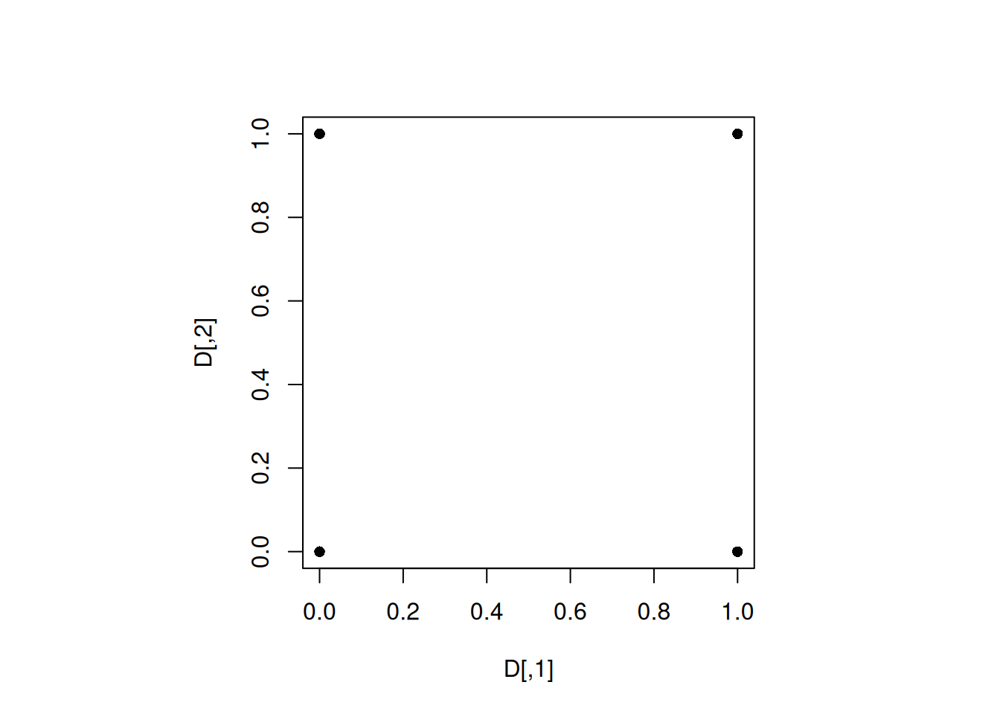

library(maximin)6 Computer experiment designs
6.1 Maximin design
Let us generate a 4-run maximin design in \([0, 1]^2\) for \(p=2\).
We will use the maximin() function of the maximin library
For generating a maximin design, we need to specify an initial design, and the function will add points to the design to develop a design that is as close to a maximin design as possible.
Let us add the origin as a point in the initial design.
D_initial <- matrix(c(0,0),1,2)set.seed(3)
D <- maximin(n = 3, p=2, Xorig = D_initial)$Xfplot(D, pch = 16)
As expected, the design is the four corners of the feasible design space as the minimum distance between any two design points is the largest in this case.
6.2 Maximin LHD
Let us generate a 4-run maximin LHD in \([0, 1]^2\) for \(p=2\).
We will use the maximinLHS() function of the lhs library
library(lhs)set.seed(1)
D <- maximinLHS(4, 2)
plot(D, xlim = c(0, 1), ylim = c(0, 1), pch = 16)
Note that the design has 4 distinct projections for each of the two factors.
6.2.1 MmLHD: Weakness
MaximinLHD have good projections in a single dimension, but projection properties in 2, 3, ‚Ķ, ùëù‚àí1 dimensions may not be good.
Let us compare the projections of a 2-dimensional design with that of a 20-dimensional design on a 2-dimensional subspace.
set.seed(3)
D <- maximinLHS(20, 2)
par(mfrow = c(1,2))
plot(D, pch = 16, main = "MmLHD(n = 20, p = 2)")
D <- maximinLHS(20, 10)
plot(D[,1:2], pch = 16, main = "MmLHD(n = 20, p = 10)")We observe that the projects of the 20-dimensional MmLHD design are not that good.
6.3 MaxProLHD & MaxPro
Let us generate a 20-run MaxProLHD and MaxPro designs in \([0, 1]^10\) for \(p=10\).
We will use the MaxProLHD() and MaxPro() functions of the MaxPro library
library(MaxPro)set.seed(3)
D1 <- MaxProLHD(20, 10)$Design
D2 <- MaxPro(D1)$Design
par(mfrow = c(1,2))
plot(D1[,1:2], pch = 16, main = "MaxProLHD(n = 20, p = 10)")
plot(D2[,1:2], pch = 16, main = "MaxPro(n = 20, p = 10)")par(mfrow = c(1,2))
plot(D[,1:2], pch = 16, main = "MmLHD(n = 20, p = 10)")
plot(D2[,1:2], pch = 16, main = "MaxPro(n = 20, p = 10)")Note that the projects of the MaxPro design on the 2-d subspace are better than the projections of the MmLHD design as expected.